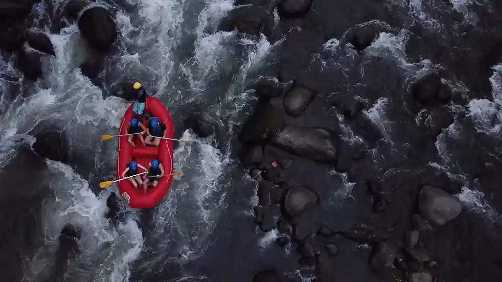
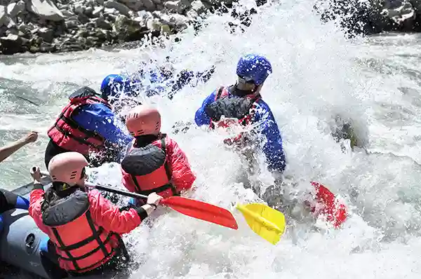

At White Water Rafting Co., adventure runs deep. From roaring rapids to calm canyon stretches, our guided trips combine excitement, teamwork, and safety for explorers of all experience levels.


White Water Rafting CO.
History
What started as a handful of weekend excursions on local rapids soon grew into a full-fledged adventure company dedicated to safety, excitement, and unforgettable memories.